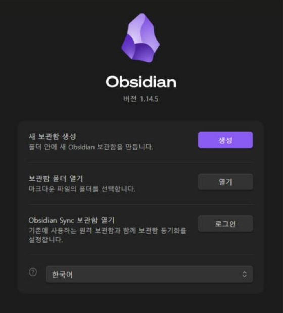

코워크는 일을 해 주고, 코드는 일하는 도구를 만들어 준다
오늘은 이 한 문장을 손으로 확인하는 날이에요. 1교시에는 반복 일을 맡기고 다시 쓰는 도구를 남기고, 2교시에는 AI가 스스로 정리·관리하는 업무 노트를 만들어요.
🗺️오늘의 흐름
🧰준비물
- 클로드 데스크톱 앱 (프로 요금제 로그인)
- 「2차시_시작폴더」 내려받기 (구글 드라이브) → 바탕화면에 압축 풀기
- 옵시디언(Obsidian) — 무료 메모 프로그램, 2교시에 사용
- 크롬 브라우저
폴더는 옮기거나 새로 만들 필요 없어요. 클로드에서 작업할 폴더를 고를 때 1교시 폴더, 업무노트 폴더를 고르기만 하면 돼요.
🖱️오늘 자주 쓰는 기본 조작
| 하고 싶은 것 | 이렇게 해요 |
|---|---|
| 내려받은 파일 찾기 | 파일 탐색기(노란 폴더 아이콘) → 왼쪽 다운로드 |
| 압축 풀기 | 압축 파일 오른쪽 클릭 → 모두 압축 풀기 → 위치를 바탕 화면으로 → 압축 풀기 |
| 프롬프트 넣기 | 교안 회색 상자의 복사 버튼 → 클로드 입력창 클릭 → Ctrl+V → Enter |
| 파일 옮기기 | 파일을 마우스로 끌어서 옮길 폴더 위에 놓기 (또는 Ctrl+X → 옮길 폴더에서 Ctrl+V) |
| 결과 파일 열기 | 파일 탐색기 → 바탕 화면 → 2차시_시작폴더 → 1교시(또는 업무노트) → 파일 더블클릭 |
| .ps1 · .md 파일 속 보기 | 파일 오른쪽 클릭 → 연결 프로그램 → 메모장 |
| .bat 실행 | 파일 더블클릭 (검은 창이 잠깐 떴다 닫히면 끝) |
| "허용하시겠어요?" | 클로드가 무엇을 하려는지 한 줄 읽고 허용 |
| 클로드가 일하는 중인지 | 입력창 위에 움직이는 표시가 있으면 일하는 중, 답이 끝나면 다시 입력 가능 |
| 퇴실 전 로그아웃 | 클로드 앱 왼쪽 아래 내 이름 → 로그아웃 |
📦지난 시간(1차시) 자료
지난주에 못 받으셨거나 다시 해 보고 싶은 분은 여기서 받으세요.
내려받은 압축 파일은 바탕화면에 풀어 두면 돼요. 오늘 쓰는 「2차시_시작폴더」와는 따로예요.
📖오늘 나오는 말 (진짜 이름은 괄호)
- 세션(session) — 코드 탭에서 연 작업 창 하나. 직원 한 명이라고 생각하면 돼요
- 프로그램(스크립트, script) — 한 번 만들면 계속 다시 쓰는 작업 파일
- 파워셸(PowerShell) — 윈도우에 기본으로 들어 있는 명령 실행 도구
- 사용량(토큰, token) — AI가 글을 읽고 쓸 때 쓰는 양
- LLM 위키(LLM Wiki) — AI가 정리·관리하는 업무 노트
- 규칙 파일(CLAUDE.md) — 이 폴더에서 AI가 늘 지키는 근무 규칙
다시 열기 — 지난주의 작업대로
지난주에 설치한 클로드 데스크톱 앱의 코드 탭을 열고, 오늘 쓸 폴더를 연결한 뒤 작업 창(세션)을 두 개로 나눠요.
👣따라 하기
- 클로드 데스크톱 앱 실행 → 위쪽에서 코드 선택
- 새 세션 → 환경은 이 컴퓨터(로컬, local)
- 작업할 폴더 선택 → 바탕화면 「2차시_시작폴더」 안의 1교시 폴더
- 폴더를 신뢰하겠냐고 물으면 신뢰
- 아래쪽 모델은 소넷(Sonnet), 권한은 자동
- 같은 폴더로 새 세션을 하나 더 열고, 세션 이름 옆 ⋯ → 분할 보기
👀이렇게 보이면 성공
화면이 둘로 나뉘고, 양쪽 모두 아래 입력창에 글을 쓸 수 있으면 준비 끝이에요.
💡왜 두 개로 나눌까요?
채팅창은 한 번에 한 가지 일만 해요. 코드는 직원을 여러 명 두듯 세션(작업 창)을 여러 개 열어 일을 동시에 맡길 수 있어요. 나는 일을 나눠 주고 결과를 확인하는 팀장이에요.
세션을 많이 열수록 사용량(토큰)도 그만큼 빨리 줄어요. 오늘은 두 개면 충분해요.
🧯막힐 때
- 로그인 창이 엣지로 떠요 → 윈도우 설정 → 앱 → 기본 앱에서 크롬을 기본 브라우저로 (지난주에 한 설정)
- 「보안을 위해 다시 로그인」이 떠요 → 그대로 다시 로그인
- 분할 보기가 안 보여요 → 세션을 두 개 연 다음, 세션 이름 옆 ⋯ 메뉴를 다시 열어 보기
- 위쪽에 「코드」가 없어요 → 지금 보고 있는 게 웹(인터넷 창)일 수 있어요. 바탕화면의 클로드 앱으로 열기
세션 두 개에 동시에 맡기기
왼쪽 세션에는 로또 프로그램과 워드 보고서를, 오른쪽 세션에는 PPT 5장을 동시에 맡겨요. 한쪽이 일하는 동안 다른 쪽 결과를 확인해요.
🅰️세션 A · 로또 → 워드 보고서
🅱️세션 B · PPT 5장
⚙️누르면 무슨 일이 일어나나요?
- AI가 먼저 할 일을 정리해요 (계획)
- lotto.html을 직접 만들고, 1,000번 뽑기를 실제로 실행해요 — 채팅창은 "해 본 척"만 할 수 있지만, 코드는 내 컴퓨터에서 진짜로 돌려요
- 실행 결과(숫자)로 워드 파일을 만들어 폴더에 저장해요
- 중간에 AI가 친 명령이 보이는 줄이 있어요. 눌러서 펼치면 파워셸(PowerShell) 명령이 보여요
👀이렇게 보이면 성공
- 1교시 폴더에 lotto.html · 로또 1,000회 시뮬레이션 보고서.docx · .pptx 파일이 생김
- lotto.html을 더블클릭 → 크롬에서 버튼을 누를 때마다 번호가 바뀜
- 워드 보고서의 표 숫자를 다 더하면 7,000 (1,000번 × 7개 공)
마지막 줄이 "결과 확인 습관"의 첫 연습이에요. 숫자 하나로 AI가 정말 1,000번 돌렸는지 확인할 수 있어요.
⏳기다리는 동안
워드·PPT 만들기는 몇 분 걸릴 수 있어요. 코드는 채팅보다 느리지만, 그동안 다른 세션의 결과를 열어 보면 돼요. 나는 팀장, AI는 팀원 둘이라고 생각하면 기다리는 시간이 아깝지 않아요.
🧯막힐 때
- 「허용하시겠어요?」가 떠요 → 허용 (처음 쓰는 명령은 물어볼 수 있어요)
- 추가 프로그램을 설치하겠다고 해요 → 허용하고 기다리기
- 워드·PPT가 끝내 안 돼요 → "보고서를 웹페이지(html)로 만들어 줘"로 바꾸기
🚀한 걸음 더
✏️결과물 고쳐 달라고 하기
결과물이 마음에 안 들면 같은 세션에 이어서 말하면 돼요. 코드는 이미 만든 파일을 열어서 고쳐요. 요령은 세 가지예요.
- 파일 이름을 콕 집어 말하기 — "lotto.html을 고쳐 줘"
- 원본은 두고 수정본으로 저장하게 하기 — 망쳐도 되돌아갈 수 있어요
- 확인 방법까지 부탁하기 — "고친 다음 어떻게 확인하는지 알려 줘"
📱내가 만든 로또 앱, 휴대폰으로 열기 — 아티팩트로 게시 코드다운 장면
지금 lotto.html은 내 컴퓨터에서만 열려요. 클로드 코드에게 "아티팩트(artifact)로 게시해 줘"라고 하면 클로드가 인터넷에 페이지를 올리고 링크를 만들어 줘요. 그 링크를 카톡으로 보내면 휴대폰에서도 열려요. 서버를 빌리거나 설정할 필요가 없어요.
👣따라 하기
- 클로드가 "비공개 페이지로 게시해도 될까요?"처럼 허락을 물으면 허용
- 답에 나온 링크를 눌러 브라우저로 열기
- 페이지 위쪽의 공유 버튼 → 링크가 있는 모든 사용자 선택 → 링크 복사
- 카톡 「나와의 채팅」에 붙여 넣고 휴대폰에서 열어 보기
처음 게시한 페이지는 나만 볼 수 있어요. 3번 공유를 해야 다른 사람도 열 수 있어요. 받는 사람은 클로드에 로그인하지 않아도 돼요.
👀이렇게 보이면 성공
- 세션 A 답에 claude.ai로 시작하는 링크가 있음
- 휴대폰에서 링크를 열면 로또 앱이 뜨고 버튼을 누르면 번호가 바뀜
- 세션 A에 "공 색을 바꿔 줘"라고 다시 말하면 같은 링크에 바로 반영됨 (게시할 때마다 새 버전이 쌓이고, 이전 버전으로 되돌릴 수도 있어요)
내가 만든 앱이 1분 만에 휴대폰에서 열린다
🧯막힐 때
- 링크 없이 html 파일만 만들었어요 / "게시할 수 없다"고 해요 → 게시 기능이 꺼진 상태예요. 클로드 앱을 최신 버전으로 업데이트하고, 앱에서 로그인한 상태인지 확인
- 휴대폰에서 "권한이 없다"고 나와요 → 3번 공유에서 「링크가 있는 모든 사용자」를 안 고른 거예요
- 링크가 어디 갔는지 모르겠어요 → 브라우저에서 claude.ai/code/artifacts 에 들어가면 내가 게시한 페이지 목록이 있어요
공개 링크는 누구나 열 수 있어요. 개인정보가 들어간 페이지는 공개하지 마세요.
🧭아티팩트 게시 vs 5차시 홈페이지 배포
| 아티팩트 게시 (오늘) | 깃허브 + 버셀 (5차시) | |
|---|---|---|
| 주소 | claude.ai 아래 링크 | 내 사이트 주소 |
| 쓰임 | 빠르게 보여 주기 · 공유 | 내 홈페이지에 메뉴로 쌓기 |
| 필요한 것 | 클로드 앱 로그인 | 깃허브 · 버셀 계정 |
오늘 만든 로또 앱은 5차시에 홈페이지의 「추첨기」 메뉴로 다시 올라가요.
반복 일을 다시 쓰는 프로그램으로 만들기
이번에는 결과만 받지 않고 그 일을 하는 프로그램(스크립트)까지 만들어 폴더에 남겨요. 다음 달에는 AI에게 다시 부탁하지 않아도 돼요.
🅰️세션 A · 사진 정리 프로그램
🅱️세션 B · 엑셀 합치기 프로그램
🔑핵심: 결과물 + 도구
.ps1 파일이 바로 다시 쓰는 도구예요. 메모장으로 열면 AI가 쓴 명령이 그대로 보여요. .bat은 그 도구를 더블클릭으로 켜는 버튼이에요.
👀이렇게 보이면 성공
- photos_정리 폴더에 「2026-행사-001.jpg」부터 030까지 30장
- 원본 photos 폴더는 30장 그대로
- 매출 합계.xlsx에 시트 3개(전체·요약·차트)
- 요약 시트의 합계 칸을 클릭하면 위쪽에 =SUM(…) 같은 수식이 보임
- 1교시 폴더에 사진정리.ps1·.bat, 매출합치기.ps1·.bat 파일
📅날짜 기준을 꼭 물어보는 이유
사진 파일에는 날짜가 두 개 있어요. 사진 속 촬영일(카메라가 기록, EXIF)과 파일 날짜(복사·저장한 날)예요. 이 실습 사진은 일부러 둘을 다르게 만들어 두었어요.
AI가 어떤 날짜로 정렬했는지 묻지 않으면, 틀린 순서로 이름이 붙어도 모르고 지나가요. 기준을 물어보는 것이 결과 확인의 시작이에요.
🧯막힐 때
- "스크립트 실행이 막혀 있다"고 나와요 → AI에게 "실행이 막히지 않는 방법으로 다시 해 줘"
- 엑셀 파일이 열려 있어서 저장이 안 된대요 → 엑셀 창을 닫고 "다시 실행해 줘"
- 정렬 기준이 파일 날짜래요 → "사진 속 촬영일 기준으로 다시 해 줘"
🚀한 걸음 더
✏️프로그램 고쳐 달라고 하기
프로그램(스크립트)도 말로 고쳐요. 끝에 "고친 다음 다시 실행해 줘"를 붙이면 고친 게 실제로 도는지 바로 확인돼요.
아하! 4월 파일이 왔다 — 코워크와 코드는 이게 달라요
회사에서 4월 매출 파일이 왔다고 해 볼게요. AI에게 처음부터 다시 부탁하지 않고, 만들어 둔 도구만 다시 돌려요.
👣따라 하기
- 파일 탐색기에서 1교시 → 나중에 폴더의 「4월_지점별매출.xlsx」를 sales 폴더로 옮기기
- 세션 B에 아래 한 줄만 보내기
파일 탐색기에서 매출합치기.bat을 더블클릭해도 돼요. 이건 AI 없이 도구만 쓰는 방법이에요.
👀이렇게 보이면 성공
- 매출 합계.xlsx의 요약 시트에 4월 열이 생김
- AI가 생각하는 시간 없이 금방 끝남 — 이미 만든 도구를 실행만 했으니까요
한 번 만든 도구는 다음 달에도, 내년에도 쓴다
🧭코워크와 코드, 뭐가 다를까?
코워크는 일을 해 주고, 코드는 일하는 도구를 만들어 준다
✍️세 문장으로 정리
- 어디서 일하나 — 코워크는 PC 안 연습 공간(가상 환경)에서 폴더만 빌려 써요. 코드는 내 윈도 PC를 그대로 써서 내 엑셀 2024를 직접 열어요.
- 무엇이 남나 — 코워크는 결과물, 코드는 결과물 + 도구. 방금 4월 파일로 직접 확인했어요.
- 8주 뒤 — 오늘 만든 도구가 예약 실행, AI 연결, 내 앱의 부품이 돼요.
🔎코드 화면 읽는 법 — 숫자와 빨간 글씨, 겁먹지 마세요
클로드 코드는 일하면서 무엇을 했는지 짧게 보고해요. 처음엔 낯설지만 몇 가지만 알면 읽을 수 있어요.
| 화면에 보이는 것 | 뜻 | 어떻게 하나요 |
|---|---|---|
| +80 (초록) | 새로 쓴 코드 줄 수. 프로그램이 80줄짜리라는 뜻 | 그냥 두기 |
| +2 -2 (초록·빨강) | 2줄 넣고 2줄 지움 = 고친 양. 이렇게 바뀐 줄을 보여 주는 걸 디프(diff)라고 해요 | 눌러 보면 어느 줄이 바뀌었는지 보여요 |
| 실행됨 명령 4개 | 클로드가 내 PC에서 친 명령(파워셸) 수 | 눌러서 펼치면 실제 명령이 보여요 |
| 실패 · 빨간 글씨 · 종료 코드 1 | 그 명령이 실패했다는 표시. 종료 코드 0 = 성공, 0이 아니면 실패. 빨간 영어는 실패한 이유(오류 메시지) | 클로드가 알아서 다른 방법으로 다시 해요. 마지막 결과만 확인하면 돼요 |
| Cannot find path … does not exist | "그 경로(폴더)를 못 찾았다" — 폴더 위치를 잘못 짚은 것 | 대부분 클로드가 스스로 찾아 고쳐요. 반복되면 "1교시 폴더 안에 있어"라고 알려 주기 |
| Get-ChildItem 같은 파란 단어 | 파워셸 명령 이름. Get-ChildItem = 폴더 안 목록 보기 | 외울 필요 없어요 |
| 목록의 d----- / -a---- | d = 폴더, a = 파일 | 그냥 두기 |
핵심: 중간에 실패가 있어도 마지막에 결과 파일이 제대로 생겼는지가 중요해요. 그래서 결과 확인 습관(개수·원본·열어 보기)이 필요해요.
✅결과 확인 습관 세 가지
- 개수 세기 — 30장 넣었으면 30장 나왔나? 행 수 합이 맞나?
- 원본 그대로인가 — 원본 폴더를 열어 바뀐 게 없는지
- 직접 열어 보기 — 엑셀 수식 칸을 클릭해 보고, 워드·PPT를 열어 보기
AI는 틀려도 자신 있게 말해요. 확인은 팀장의 몫이에요 (사람이 확인하는 단계, HITL).
LLM 위키란? — 세컨드 브레인을 만드는 한 가지 방법
세컨드 브레인은 갖고 싶은 것(목표), LLM 위키는 그걸 만드는 방법이에요. 오늘은 LLM 위키를 만들고, 매주 쌓이면 그게 내 세컨드 브레인이 돼요.
①세컨드 브레인 = 머리 밖에 둔 두 번째 머리
내가 본 것, 배운 것을 잊지 않게 머리 밖에 쌓아 두는 창고. 정해진 프로그램 이름이 아니라 목표를 부르는 말이에요.
②문제: 모으긴 하는데, 정리를 못 해요
스크린샷, "나중에 볼 영상", 메모… 쌓이기만 하고 정리가 귀찮아서 결국 못 써요. 사람이 위키를 포기하는 이유도 고치고 잇는 일이 귀찮아서예요.
③그냥 AI에게 물으면: 매번 처음부터 뒤져요
질문할 때마다 원본을 다시 뒤져서 답하고, 어제 찾은 걸 기억해 두지 않아요. 자료끼리 어떻게 이어지는지는 어디에도 남지 않아요.
④LLM 위키: 들어올 때 미리 정리해 두는 AI
자료가 들어오는 순간 AI가 읽고, 정리 페이지를 쓰고 고치고 서로 이어 둬요. 질문하면 이 정리된 위키에서 출처를 붙여 답해요.
⑤그래서 관계는? 큰 동그라미 안의 한 가지 방법
사람은 자료를 고르고 질문만, 정리는 AI가
🧱세 층과 세 동작
| 층 | 쉬운 설명 |
|---|---|
| 원본 자료 (raw 폴더) | 받은 자료를 그대로 두는 곳. AI는 읽기만 해요 |
| 정리 노트 (wiki 폴더) | AI가 읽고 정리해서 쓰는 페이지들. 사람은 읽기만 해요 |
| 규칙 파일 (CLAUDE.md) | 어떻게 정리할지 정한 근무 규칙 |
넣기(Ingest) · 묻기(Query) · 점검(Lint) — 사람이 하는 일은 이 셋뿐이에요.
👤누가 만든 방법?
안드레이 카파시(Andrej Karpathy) — OpenAI 창립 멤버이자 전 테슬라 AI 총괄. 2026년 4월 깃허브에 "LLM Wiki"라는 짧은 글로 공개했어요.
일부러 대략적으로 써서, 각자 자기 AI에게 주고 자기에게 맞게 만들게 했어요. 그래서 오늘도 원문을 AI에게 통째로 주고 시작해요.
원문: gist.github.com/karpathy/442a6bf555914893e9891c11519de94f
위키 만들기 — 규칙 파일을 세우고 첫 자료 넣기
양천상사(가상 회사)의 업무 자료 7개로 위키를 만들어요. 먼저 규칙을 정하고, 그다음 자료를 넣어요.
📂먼저: 새 세션 열기
- 코드 → 새 세션
- 작업할 폴더: 「2차시_시작폴더」 안의 업무노트
- 모델 소넷, 권한 자동
업무노트 → 새자료 폴더에 양천상사 자료 8개가 있어요. 그중 「나중에_」로 시작하는 1개는 STEP 7에서 써요.
재료(원본 자료)는 미리 준비돼 있고, 위키는 아직 비어 있어요. 프롬프트를 붙여 넣으면 클로드가 재료를 읽고 위키를 새로 만들어요. 폴더도 클로드가 만들어요.
🗂️양천상사 자료 (새자료 폴더)
- 01 회사소개 · 02 배송정책 · 03 환불교환규정
- 04 10월 주간회의록 · 05 10월 고객문의모음
- 06 신상품안내(겨울담요) · 07 10월 매출요약
- 나중에_08 환불규정개정공지 (STEP 7용)
📜① 규칙 파일 만들기
💡규칙 파일은 왜 중요할까?
폴더 맨 위에 둔 CLAUDE.md는 클로드 코드가 이 폴더에서 일을 시작할 때마다 알아서 먼저 읽는 근무 규칙이에요. 그래서 다음 주에 새 세션을 열어도 같은 방식으로 정리해요.
| 스킬 (지난주) | 규칙 파일 (오늘) |
|---|---|
| 특정 일 하나의 방법서 (예: 양천상사 보고서 만들기) | 이 폴더에서 늘 지키는 근무 규칙 |
👀이렇게 보이면 성공
- 업무노트 폴더에 raw, wiki 폴더와 CLAUDE.md
- raw 안에 자료 7개, 새자료 폴더에는 「나중에_08」만 남음
- AI가 규칙 ①~⑦을 요약해서 보여 줌
CLAUDE.md를 메모장으로 열어 보세요. 내가 정한 규칙이 그대로 들어 있어요. 마음에 안 들면 직접 고쳐도 돼요.
📥② 첫 자료 넣기 — 넣기(Ingest)
AI가 페이지 목록(계획)을 먼저 보여 주면 읽어 보고 "좋아, 진행해"라고 답하세요. 팀장이 승인하고 직원이 일하는 순서예요.
🔰옵시디언이 처음이라면 (설치부터 그래프까지)
| 순서 | 할 일 | 화면에서 찾을 것 |
|---|---|---|
| 1 설치 | 크롬에서 obsidian.md 접속 → Download → 윈도우용 설치 파일 실행 | 무료예요. 회원가입은 필요 없어요 |
| 2 첫 화면 | 처음 켜면 버튼이 세 개 나와요. 가운데 보관함 폴더 열기 옆 「열기」 (아래 그림) | 맨 아래에서 언어를 한국어로 고를 수 있어요. 영어 화면이면 Open folder as vault → Open |
| 3 폴더 고르기 | 바탕화면 → 2차시_시작폴더 → 업무노트 폴더를 한 번 클릭하고 「폴더 선택」 | 폴더 안으로 들어가지 말고 폴더를 선택만 |
| 4 신뢰 질문 | "이 보관함 작성자를 신뢰하나요?"가 뜨면 신뢰 | 안 뜨면 그냥 넘어가요 |
| 5 페이지 보기 | 왼쪽 파일 목록에서 wiki → index.md(목차) 클릭 | 파란 글씨(링크)를 누르면 그 페이지로 이동 |
| 6 그래프 | 왼쪽 맨 끝 세로 아이콘 줄에서 점 세 개가 선으로 이어진 아이콘(그래프 보기) | 마우스를 올리면 「그래프 보기」 글자가 떠요. 점을 클릭하면 그 페이지가 열려요 |
| 7 다른 폴더로 | 왼쪽 아래 보관함 이름 클릭 → 보관함 관리하기… → 「보관함 폴더 열기」 | 예시 위키를 열 때 이 방법으로 |

옵시디언은 위키 파일을 "보기만 하는 창"이에요. 여기서 아무것도 안 고쳐도 돼요. 글을 쓰고 고치는 건 클로드 코드가 해요. 메뉴 이름은 옵시디언 1.14 한국어 화면 기준이에요.
🕸️③ 옵시디언으로 보기
- 옵시디언 실행 → 보관함 폴더 열기 (Open folder as vault)
- 바탕화면 → 2차시_시작폴더 → 업무노트 선택
- 왼쪽 아이콘 중 그래프 보기 (Graph view) 클릭
점(페이지)과 선(링크)이 보여요. 회사소개를 중심으로 배송·환불·상품·회의가 이어져 있어요.
보관함(볼트, Vault)은 옵시디언이 폴더를 부르는 이름일 뿐이에요. 옵시디언은 위키를 "보는 창"이고, 인터넷이 없어도 보여요.
✨쌓이면 이렇게 돼요
자료가 수십 개 쌓이면 비슷한 주제끼리 색깔별 덩어리(클러스터, cluster)로 뭉쳐요. 다음 주부터 만드는 내 위키도 이렇게 자라요.
양천상사 예시 위키 내려받기 (구글 드라이브) → 압축을 2차시 폴더 밖에 따로 풀고 옵시디언 「보관함 폴더 열기」로 열어 보세요.
🧯막힐 때
- 원문 링크를 못 읽어요 → 프롬프트의 첫 줄(링크)과 "이 글을 먼저 읽고"를 지우고 그대로 진행
- 규칙만 만들랬는데 위키까지 만들었어요 → 괜찮아요. ②를 건너뛰고 ③으로
- 옵시디언에 그래프 아이콘이 안 보여요 → 왼쪽 맨 위 작은 아이콘들 위에 마우스를 올려 「그래프 보기」 찾기
- 그래프에 점이 너무 많아요 → 오른쪽 위 설정에서 「첨부 파일」·「존재하지 않는 파일」 끄기
🚀한 걸음 더
묻고 키우기 — 출처 붙은 답, 그리고 자라는 위키
위키에 질문해서 출처가 붙은 답을 받고, 새 자료를 하나 넣어 위키가 스스로 고쳐지는 걸 봐요.
❓① 질문하기 — 묻기(Query)
🔗이 질문이 좋은 이유
배송 정책(언제 출고되나, 늦으면 어떻게 하나)과 환불 규정(출고 전 취소, 7일 이내)을 둘 다 봐야 답이 나와요. 자료 하나만 뒤지면 놓치는 질문이에요.
답 끝에 출처 파일 이름이 붙어 있는지 꼭 확인하세요. 출처를 열어 맞는지 보는 게 결과 확인 습관이에요.
💾좋은 답은 위키에 저장
다음에 비슷한 질문이 오면 여기서부터 시작해요. 물을수록 똑똑해져요.
단, 틀린 답을 저장하면 그 위에 계속 쌓여요. 출처 확인 후 저장!
⏰② 자료 하나 더 — 이번엔 예약 작업(Scheduled task)으로 코드다운 장면
새 자료가 올 때마다 "반영해 줘"라고 말하는 대신, 정해진 시간에 AI가 알아서 반영하게 걸어 둬요. 오늘은 맛보기로 5분 뒤 한 번 실행해요.
- 아래 프롬프트로 예약부터 걸기
- 파일 탐색기에서 업무노트 → 새자료 → 「나중에_08-환불규정개정공지.md」를 raw 폴더로 옮기기 (환불 기간 7일 → 14일)
- 기다리는 5분 동안 ① 질문하기나 STEP 8 점검 프로그램 하기
- 5분 뒤 환불 페이지와 wiki/log.md 열어 보기 → 저절로 바뀌어 있으면 성공
🤔예약은 코워크에도 있지 않나요?
네, 예약 기능 자체는 코워크에도 있어요. 코드에서 다른 점은 예약이 무엇을 돌리느냐예요.
- 이 폴더의 규칙 파일(CLAUDE.md)대로 정리해요
- 연습 공간이 아니라 내 PC의 진짜 폴더를 고쳐요
- 내가 만든 도구(프로그램)도 예약으로 돌릴 수 있어요 — 예) "매달 1일에 매출합치기.bat 실행"
주의: 예약 작업은 클로드 앱이 켜져 있고 컴퓨터가 깨어 있을 때만 실행돼요. 앱을 닫거나 절전 모드면 건너뛰어요.
👀이렇게 보이면 성공
- 새 페이지만 생기는 게 아니라 기존 환불 페이지가 고쳐짐
- 날짜에 따라 규정이 다른 부분에 ⚠ 충돌 표시
- wiki/log.md에 오늘 한 일이 한 줄 추가
💡이게 왜 대단할까?
사람이 위키를 포기하는 이유는 새 자료가 올 때마다 관련 페이지를 찾아 고치는 게 귀찮아서예요. AI는 지치지 않고, 한 번에 여러 페이지를 고쳐요.
그리고 고친 기록(log.md)과 충돌 표시를 남겨서, 무엇이 바뀌었는지 사람이 확인할 수 있어요.
🧯막힐 때
- 출처 없이 답했어요 → "규칙 ⑤대로 출처 파일 이름을 붙여서 다시 답해 줘"
- 새 자료를 못 찾는대요 → 「나중에_08」 파일이 raw 폴더 안에 있는지 확인
- 충돌 표시가 없어요 → "날짜에 따라 규정이 다른 부분을 규칙 ⑥대로 표시해 줘"
- 5분이 지나도 안 바뀌어요 → 클로드 앱이 켜져 있는지 확인 → 세션에 "위키 자동 갱신 예약이 실행됐는지 확인해 줘" → 끝내 안 되면 "지금 바로 raw 새 자료를 반영해 줘"로 진행
- 예약을 만들 수 없대요 → 앱을 최신 버전으로 업데이트 / 안 되면 이번엔 직접 "반영해 줘"로 하고, 예약은 다음 주에 다시
🚀한 걸음 더
점검 프로그램과 정리 — 위키도 도구로 관리해요
1교시처럼 AI에게 점검하는 도구를 만들게 해요. 한 번 만들면 그 뒤로는 AI 없이도 위키 상태를 확인할 수 있어요.
🩺점검 프로그램 만들기 — 점검(Lint) 코드다운 장면
👀이렇게 보이면 성공
- 업무노트 폴더에 위키점검.ps1
- wiki 폴더에 점검표.md — 문제 개수와 목록
- STEP 7에서 표시한 ⚠ 충돌 1건 이상이 잡혀 있음
🔁1교시와 같은 이야기
점검할 때마다 AI가 처음부터 다시 읽어요
AI가 한 번 만든 점검 도구가 대신 일해요 (사용량 없이)
도구(프로그램)와 규칙(규칙 파일)이 남는다
🧾오늘 정리
| 1교시 | 세션 두 개로 일을 나눠 맡기고, 사진·엑셀 일을 다시 쓰는 프로그램으로 남김 |
|---|---|
| 2교시 | 규칙 파일을 세우고 넣기 · 묻기 · 점검으로 AI가 관리하는 업무 노트를 만듦 |
| 공통 | 코워크는 일을 해 주고, 코드는 일하는 도구와 규칙을 남긴다 |
📅다음 주 · 내 위키 만들기
숙제: 내 위키에 넣을 자료 5~10개 준비해 오기
- 업무 매뉴얼 · 회의록 정리
- 책 · 강의 공부 노트
- 취미 · 여행 기록
다음 주에는 오늘 방법 그대로 내 위키를 만들고, 오늘 맛본 예약 작업을 매주 반복으로 붙여서 수업에 오면 이미 정리돼 있게 해요.
🔒꼭 지켜 주세요
- 개인정보 · 회사 기밀 · 건강 기록은 넣지 않기 (공용 PC이고, 나중에 인터넷에 올려요)
- 퇴실 전 클로드 로그아웃 (왼쪽 아래 내 이름 → 로그아웃)
🚀한 걸음 더 ① 웹 기사 넣기
- 크롬 웹스토어에서 Obsidian Web Clipper 설치 (무료)
- 설정에서 저장 위치를 Clippings → raw로 바꾸기
- 관련 웹 기사 하나를 저장한 뒤 세션에 "새 자료 반영해 줘"
🚀한 걸음 더 ② 남이 만든 스킬과 비교
지난주에 배운 것처럼, 깃허브에는 남들이 만든 업무 매뉴얼(스킬)이 쌓여 있어요.
🚀한 걸음 더 ③ 오늘 수업을 내 위키에 넣어 보기
다음 주에 만들 내 위키를 미리 맛봐요. 오늘 1교시에 한 일을 수업 노트로 써서 위키에 넣으면, 양천상사 위키 옆에 "내 수업" 페이지가 생겨요.
옵시디언 그래프를 다시 보면 새 점이 생겨 있어요. 다음 주에는 이 자리에 내가 준비한 자료 5~10개를 넣어요.
🚀한 걸음 더 ④ 위키에 더 물어보기
🧯막힐 때
- 스크립트 실행이 막혀 있대요 → "실행이 막히지 않는 방법으로 다시 실행해 줘"
- 점검표가 비어 있어요 → "점검표.md를 열어서 결과를 요약해 줘"